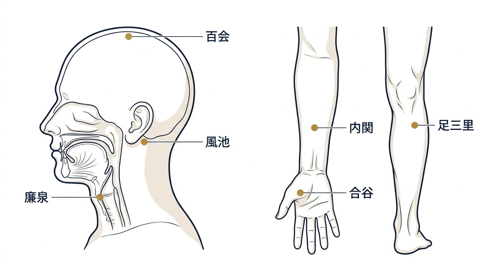

奇異性脳塞栓の鍼灸
静脈の血栓が心臓の右左シャントを通って脳血管を塞ぐ脳梗塞です。急性期は救急対応を最優先し、安定期の回復・予防を支えます。


院長YouTube解説・関連動画
公開日：２０２２年 １２月 １日
更新日：２０２２年 １２月 ３日
本日は奇異性脳塞栓について解説させていただきます。
☆本記事の内容
- •奇異性脳塞栓とは
- •奇異性脳塞栓の原因
- •奇異性脳塞栓の症状
- •奇異性脳塞栓の改善方法
- •奇異性脳塞栓のまとめ
- •奇異性塞栓症は、血栓が脳血管系を閉塞することで起きる脳梗塞
- •特に1番多いと言われている原因は、卵円孔開存症
- •奇異性脳梗塞の症状は、人によって違う
- •奇異性脳梗塞の改善は、脳梗塞と同じような薬を使って改善を行う
- •脳梗塞について
- •奇異性脳塞栓の改善例
銀座そうぜん鍼灸院の宗前です。
このページを書いている私は、鍼灸師として１３年、担当した利用者様数８０，０００人を誇り、病気の休職者３００人を社会復帰できるまで回復させてきた実績があります。
奇異性脳梗塞の症状は、人によって違う
奇異性脳梗塞の症状は、人によって違います。症状が軽い場合、頭痛やめまい、視野の異常などが起こります。症状が軽いと自然に改善することもあります。しかし、症状が重い場合は手足の麻痺や言語障害などが起きることもあります。
奇異性脳梗塞の原因の多くは卵円孔開存症です。卵円孔開存症が原因で発症する奇異性脳梗塞は、比較的若い世代で発症するとされており60歳未満に発症することも多いと言われています。
以下は、奇異性脳塞栓（Embolic Stroke of Undetermined Source, ESUS）の症状に関する説明です。
急激な神経学的症状の発現：奇異性脳塞栓の典型的な特徴は、突然の神経学的症状の発現です。これは一過性の症状であることもありますが、一部では持続的な症状となることもあります。症状の具体的な種類と重症度は、脳塞栓の位置とサイズによって異なります。
顔面または四肢の片側の筋力低下または麻痺：奇異性脳塞栓が脳の運動領域を影響する場合、片側の顔面や四肢の筋力低下または麻痺が発生することがあります。この症状は、片麻痺（半身不随）として知られています。
片側の感覚障害：奇異性脳塞栓が脳の感覚領域を影響する場合、片側の体の感覚障害が生じることがあります。これにより、片側のしびれや感覚の減退が起こることがあります。
言語障害：奇異性脳塞栓が脳の言語領域を影響する場合、言語障害が発生することがあります。これにより、言葉の理解や話す能力に障害が生じることがあります。
視覚障害：奇異性脳塞栓が脳の視覚領域を影響する場合、片側の視野の喪失や視覚のぼやけ、視力の低下が発生することがあります。
錯乱または認知障害：奇異性脳塞栓が脳の認知機能を影響する場合、錯乱や認知障害が生じることがあります。これにより、注意力の欠如、記憶障害、判断力の低下などが見られることがあります。
頭痛やめまい：一部では、奇異性脳塞栓により頭痛やめまいが発生することがあります。これは、血液の供給が阻害されることによる一過性の症状として現れる場合もあります。
奇異性脳塞栓の症状は個人によって異なる場合があります。また、症状の重症度や持続時間も個別の症例によって異なります。
奇異性脳梗塞の改善方法は、脳梗塞と同じような薬を使って改善を行うことです。アスピリンのような抗血小板薬やワルファリンカリウムなどの抗凝固薬を使います。
卵円孔開存症が原因の場合は、カテーテルを使って卵円孔を閉じる器具を留置する方法で改善を行うこともあります。カテーテルを使った改善方法が進んでいるため、手術で改善を行うことは少なくなっています。
しかし、カテーテルを使った改善が難しい場合や心臓の手術が必要な病気を引き起こしている場合は、手術を行うこともあります。
奇異性脳塞栓の改善方法は、症状、リスクファクター、および原因の特定に基づいて個別に決定されます。以下に、一般的な奇異性脳塞栓の改善方法を紹介します。
血栓予防薬の処方：奇異性脳塞栓の改善には、血栓予防薬が一般的に使用されます。これには、抗血小板薬や抗凝固薬が含まれます。抗血小板薬としては、アスピリンが最も一般的な選択肢です。抗凝固薬としては、ワルファリンや直接経口抗凝固薬（DOACs）が使用されることがあります。効果と出血リスクのバランスを考慮し、医師が最適な薬剤と投与量を決定します。
血圧管理：高血圧は、脳塞栓のリスクを増加させる要因の一つです。奇異性脳塞栓では、血圧の管理が重要とされています。血圧を正常範囲に制御するために、薬や生活習慣の改善（適切な食事、適度な運動、ストレス管理）が行われます。
心房細動：心房細動は、奇異性脳塞栓の一般的な原因の一つです。心房細動では、心房細動の管理が重要です。抗凝固薬の投与に加えて、心房細動のコントロールを目指すために抗不整脈薬やリズムコントロールの薬剤が使用されることがあります。また、心房細動には、カテーテルアブレーション手術や心臓ペースメーカーの留置などの侵襲的な処置が必要な場合もあります。
動脈硬化の管理：動脈硬化は、奇異性脳塞栓のリスクを高める要因です。動脈硬化の進行を遅らせるために、血液中のコレステロールや脂質の管理が行われます。これには、スタチン薬の薬、食事など定期的な運動、健康的な生活習慣の促進が含まれます。
生活習慣の改善：奇異性脳塞栓の改善では、生活習慣の改善が重要な役割を果たします。禁煙や減量、バランスの取れた食事、適度な運動、ストレス管理などが奨励されます。これらの変更は、再発のリスクを低減し、全体的な健康状態を改善するのに役立ちます。
必要に応じた手術や侵襲的な処置：一部では、特定の病因に基づいて手術や侵襲的な処置が必要となる場合があります。例えば、心臓弁膜症による血栓形成のリスクが高い場合には、心臓弁の修復や置換手術が検討されることがあります。
改善方法の選択肢は個別によって異なります。
脳梗塞は、脳の血管が細くなったり詰まったりすることで、脳の神経細胞に障害が起きる病気です。
脳の血管が詰まると数時間以内に神経細胞が壊死してしまいます。神経細胞は再生することも難しいため、麻痺などの重大な後遺症が残ることも多いです。
脳梗塞の原因として有名なものは、動脈硬化や不整脈です。しかし、奇異性脳塞栓も比較的若い年代に起こる脳梗塞です。
奇異性脳塞栓の改善例
Aは、50歳の男性で、以前に高血圧の判断を受けていました。最近、突然の左半身の麻痺と話す能力の低下があり、緊急病院に行きました。病院では、脳画像が行われ、右大脳半球の一部に脳塞栓が見つかりました。
Aは神経学的症状を示しており、一過性の脳塞栓の可能性が考えられました。ESUSの判断を確定させるため、心電図、心エコー、頸動脈エコーなどが行われました。これらの結果により、心房細動や動脈狭窄などの異常は見つかりませんでした。そのため、Aは奇異性脳塞栓と判断されました。
改善の開始にあたり、Aは以下のようなアプローチを受けました。
血栓予防薬の処方：Aには、アスピリンという抗血小板薬が処方されました。アスピリンは血栓形成を抑制する効果があり、再発のリスクを低減するために使用されます。
血圧管理：Aは以前に高血圧の判断を受けていましたので、血圧管理が重要とされました。彼には特定の降圧薬が処方され、定期的に血圧のモニタリングが行われました。
心房細動のスクリーニング：心房細動は奇異性脳塞栓の一般的な原因の一つです。Aには心電図ホルター装置が装着され、心房細動のスクリーニングが行われました。しかし、心房細動は検出されませんでした。
生活習慣の改善：Aは、禁煙、バランスの取れた食事、適度な運動、ストレス管理などの生活習慣の改善を促されました。これにより、全体的な健康状態の向上と再発のリスクの低減が期待されました。
フォローアップとモニタリング：Aは定期的なフォローアップを受け、血圧、血液、脳画像などのモニタリングが行われました。これにより、効果や症状の進行を確認し、必要に応じて計画を調整することが可能となりました。
Aは改善と生活習慣の改善に協力し、定期的なフォローアップに出席しました。彼の症状は時間とともに改善し、再発のリスクは低減しました。彼は血圧の管理を継続し、アスピリンの服用を続けました。さらに、健康的な生活習慣を維持し、定期的な医師の判断を受けることが奇異性脳塞栓の予防と管理において重要であることを学びました。
この例は、奇異性脳塞栓の一つのケースを示したものです。しかし、計画は個人によって異なる場合があります。
▼ 詳しく知りたい項目だけタップして開けます（全項目の医学解説を収録）
01. 原因とメカニズム
なぜ症状が起きるのか・鍼灸の作用機序を読む
▼
01. 原因とメカニズム
なぜ症状が起きるのか・鍼灸の作用機序を読む
下肢の深部静脈血栓症（エコノミークラス症候群など）で生じた静脈側の血栓が、卵円孔開存症や心房中隔欠損症、肺動静脈瘻といった心臓や肺の右左シャントを通過して動脈側へ流れ込み、脳の血管を塞ぐことで起こる脳梗塞です。動脈硬化が少ない比較的若い年代でも発症することがあります。発症時は数時間以内に神経細胞が壊死するため、直ちに救急搬送され専門医療機関で治療を受けることが絶対最優先です。
なぜ鍼灸で改善へ向かうのか？（作用機序の図解）
奇異性脳塞栓に対する鍼灸は、心拍変動・血管トーンを整える自律神経サポート機序を通じて、お体本来の回復力を引き出します。
循環器専門医の標準治療を絶対前提とし、手首や背部の安全な経穴へ低刺激でアプローチします。
心臓への過剰な交感神経刺激を穏やかに鎮め、心拍リズムと血管緊張の急変を抑えます。
ストレスで固まりやすい胸郭や横隔膜の緊張を解き、酸素摂取とリラックス反応を促します。
内服管理を厳守しながら、疲労やストレスが引き金となる症状不安の軽減を支えます。
02. よくあるお悩み
このような症状はありませんか？（4項目）
▼
02. よくあるお悩み
このような症状はありませんか？（4項目）
- ✓突然の頭痛やめまい、視野の異常が生じた
- ✓片側の手足のしびれ・麻痺や言葉の出にくさがある
- ✓卵円孔開存症や深部静脈血栓症を指摘されている
- ✓脳梗塞後の回復期・安定期にこわばりや疲労感をケアしたい
03. 当院の施術アプローチ
施術の進め方・改善のポイントを見る
▼
03. 当院の施術アプローチ
施術の進め方・改善のポイントを見る
04. ツボ詳細・セルフケア一覧
脳卒中後遺症・嚥下・構音リハビリ併用のツボ図解（6穴）
▼
04. ツボ詳細・セルフケア一覧
脳卒中後遺症・嚥下・構音リハビリ併用のツボ図解（6穴）
実際の施術ではお一人おひとりの体質・症状に合わせて選穴しますが、脳卒中後の嚥下障害・構音障害・片麻痺リハビリ併用ケアの臨床でよく用いられる代表的なツボの目安です。
| ツボ名 | 位置の目安 | 主な狙い | セルフケアの注意点 |
|---|---|---|---|
| 百会（ひゃくえ） | 頭頂部の中央 | 覚醒度・神経可塑性・気分の安定サポート | 穏やかなタッチで頭部の緊張を緩めます。 |
| 風池（ふうち） | 後頭部の生え際のくぼみ | 項部筋の過緊張緩和・嚥下反射の補助 | 無理のない座位・側臥位で優しく刺激します。 |
| 廉泉（れんせん） | あごの下、のど仏の上のくぼみ | 舌骨上筋群・咽頭周囲の協調運動サポート | セルフでは強く押さず、専門家の施術に委ねます。 |
| 内関（ないかん） | 手首の横ジワから指3本分肘寄りの中央 | 自律神経の落ち着き・リハビリ時の不安軽減 | 健側・患側とも優しい圧で行います。 |
| 合谷（ごうこく） | 手の甲、親指と人差し指の間 | 上肢の循環促進・口腔顔面領域の遠隔調整 | 抗凝固薬服用中は内出血に注意し優しく押します。 |
| 足三里（あしさんり） | 膝の下外側、指4本分下 | 下肢の歩行リハビリ補助・胃腸機能サポート | 温めや軽いさすり刺激で循環を助けます。 |
05. 医学的根拠・国際査読論文（PubMed / Cochrane）
科学的エビデンス・出典リンク一覧（4件）
▼
05. 医学的根拠・国際査読論文（PubMed / Cochrane）
科学的エビデンス・出典リンク一覧（4件）
国際的な医学データベース（PubMed・Cochrane等）で報告されている脳卒中後の嚥下障害・構音障害・片麻痺リハビリ併用ケア領域の代表的な査読済み鍼灸研究をまとめています（標準治療との併用や研究上の限界を含めて正確に掲載）。
| 年・研究デザイン | 対象・規模 | 主な結果 | 限界・出典 |
|---|---|---|---|
| 2019年 大規模多施設RCT | 慢性安定狭心症 398名解析（標準薬物療法併用） | 16週時点の4週間発作減少は実鍼群がシャム群比5.18回・待機群比5.63回多く有意改善（P<0.001）。 | 標準薬物療法への併用（補完）試験であり単独療法ではない。 JAMA Intern Med (PMID: 31355870) |
| 2007年 シャム対照RCT | 本態性高血圧 140名完了（ドイツ・24時間ABPM） | 治療終了時の24時間血圧はシャム比SBP -6.4mmHg・DBP -3.7mmHg有意低下（P<0.001）。 | 終了3〜6か月で治療前水準へ戻るため継続ケアが必要。 Circulation (PMID: 17548730) |
| 2015年 メタ解析 | 高血圧 23 RCTs（n=1,788） | 降圧薬＋実鍼は降圧薬＋シャム比でSBP -7.47mmHg・DBP -4.22mmHg有意低下。鍼単独は降圧薬と同等・根拠不十分。 | 盲検化・異質性に課題。降圧薬の自己中断は厳禁。 PLoS One (PMID: 26207806) |
| 2025年 メタ解析 | 心拍変動（HRV）10 RCTs（n=744） | 自律神経全体の適応指標SDNNを有意に改善、重篤な有害事象なし。 | LF・HFには不確実性が高くさらなる検証が必要。 Front Neurosci (PMID: 41230507) |
参考文献・出典
- 2019年 大規模多施設RCT（慢性安定狭心症 398名解析（標準薬物療法併用））— JAMA Intern Med (PMID: 31355870)
- 2007年 シャム対照RCT（本態性高血圧 140名完了（ドイツ・24時間ABPM））— Circulation (PMID: 17548730)
- 2015年 メタ解析（高血圧 23 RCTs（n=1,788））— PLoS One (PMID: 26207806)
- 2025年 メタ解析（心拍変動（HRV）10 RCTs（n=744））— Front Neurosci (PMID: 41230507)
06. よくある質問（FAQ）
よくあるご質問を見る（2件）
▼
06. よくある質問（FAQ）
よくあるご質問を見る（2件）
Q. 急なめまいや視野の異常、手足のしびれが出た場合はどうすればよいですか？
症状が軽く一時的に治まったように見えても脳梗塞の前兆や発症の可能性があるため、絶対に様子を見ず、直ちに救急受診または脳神経内科・脳神経外科を受診してください。
Q. 脳梗塞後のリハビリと並行して鍼灸を受けられますか？
病状が安定しており、かかりつけ医から許可が得られている回復期・維持期であれば、リハビリテーションと併用して筋肉のこわばりや自律神経の乱れを和らげる補完的ケアとしてご相談いただけます。
あわせて読まれる関連疾患（循環器のお悩み）
首の骨の中を通る椎骨動脈の内膜が裂ける重篤な血管疾患です。突然の頭痛は即救急受診が必須で、首への施術や操作は絶対禁忌です。
血管内に血の塊ができて血流を塞ぐ病気です。急性期は救急・専門治療を最優先し、安定期の予防と体調管理をサポートします。
脚などの深部静脈に血栓ができ、肺へ飛ぶと肺塞栓症を招く危険な病気です。血栓期の下肢マッサージや局所鍼灸は絶対禁忌で、医療管理が最優先です。
夜間や安静時に心室細動を起こし得る遺伝性不整脈疾患です。循環器専門医での厳重な管理を最優先に、安定期のストレス管理を支援します。
おへそが飛び出し腸管などが脱出する状態です。激しい痛みや戻らない膨らみは緊急受診が必須、安定期の腹圧対策等を補完支援します。
動脈血中の酸素が不足した状態です。医療機関での酸素投与と原因疾患の治療を最優先に、安定期の呼吸環境や疲労感をサポートします。
CLINICAL RECOVERY CASES
✨ 実際の臨床改善事例・回復経過を見る
銀座本院をはじめ各院での実際の改善事例を症状別に絞り込んでご確認いただけます。
おひとりで悩まず、まずはご相談ください
銀座本院・川口・大宮・横浜・博多・田無の各院でご予約を承っております。